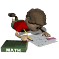
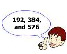

|  |  |
Two boys, Harry and Rama, who were the best of friends, often went to the movies together. One time, as they waited for the newest Spiderman flick to begin, they were looking at the numbers on the stubs of their tickets.
Rama, an expert on number trivia, said, "Hey, I have a nice number, 191. Not only is it a palindrome, but it's a prime!"
"So you have a palindromic prime then," replied Harry. "I wish I had a number as interesting as yours. Mine is just 192. Looks very ordinary or boring to me."
"Quite the contrary, my friend," said Rama. "If you take your number 192, then double it, and triple it, you have an arithmetic sequence of 3 terms that contains all the nine digits from 1 to 9, once and only once."
After doing a quick calculation on the side of his box of popcorn, Harry's eyes lit up in great surprise. "By golly, you're right! That's neat."
Speaking with the authority of a trained mathematician, "And it's the smallest such number to produce that effect," Rama said proudly.
"I bet that can't happen again, can it?" asked Harry.
Rama responded, "As a matter of fact, it can. Recall I said it was the smallest. There are some others. Let's see if you can find one or more of them before the show starts. And to make your search a little easier, I'll give you a hint. The sum of the digits of the beginning number is always 12. Okay?"
And with that, Harry set to work, finding one number just as the movie began.
What possibly was the number discovered by Harry so quickly?
Extra: Find all such numbers that have this 9-digit property.
| Comments? Send e-mail. | Back to top | Go back to Home Page | Go back to Contents |